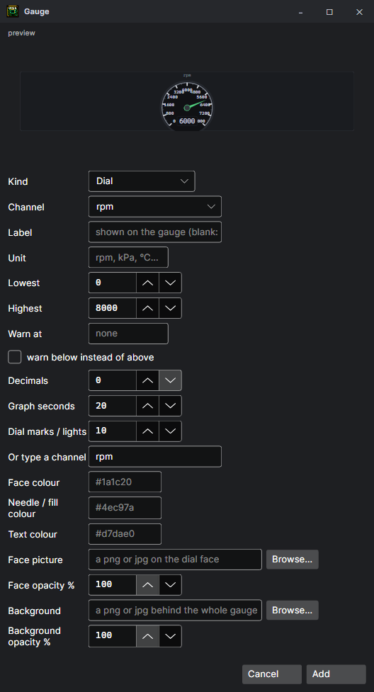
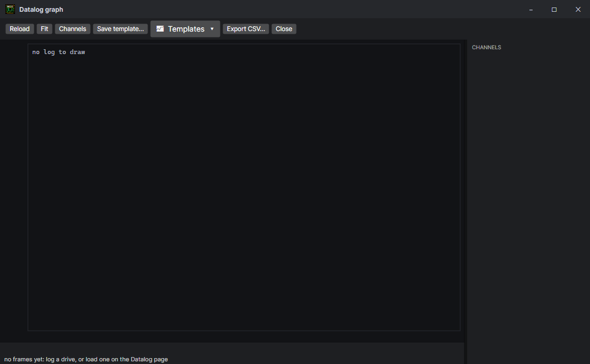

Gauges, graph and widgets
A dashboard of your own for the datalog: on the Datalog panel, or in floating widgets anywhere on the screen.
The dashboard
The gauges sit above the graph or the parameters on the Datalog panel. Each shows one channel of the log — rpm, MAP, AFR, coolant, an aux channel of your own — over the range you give it, with a warning level. Simulator mode and Tuner mode each keep a dashboard of their own.
| Gauge | Shows |
|---|---|
| Dial | A round dial with a needle. |
| Arc | A digital-dash sweep: a thick arc that fills, the number big in the middle. |
| Bar | A bar that fills up. |
| Number | The reading as a big number. |
| Light | A lamp that comes on past the warning level (or below it). |
| Shift lights | Green, amber, then red as the reading climbs to the warning level; they flash past it. |
| Graph / Bar graph | The last few seconds as a line or as bars. |
| Text | A caption on its own, for headings. |

+ adds a gauge; double-click one (or ✎) to change it: its kind, channel, range, warning level, colours, and a picture for its face or behind it. Drag gauges to arrange them; Delete takes the selected one off, and Ctrl+Z / Ctrl+Y undo and redo any change to the dashboard. The Dashboard menu saves and loads a layout as a file, and replaces it with a ready-made template.
Gauges can also be made from the values themselves: pick one or several in the datalog's values list (Ctrl+click, Shift+click or drag a box over them), right-click, and Add gauges — or all as dials, bars, numbers, rolling graphs or lamps, or floating in a widget. Each comes with a range to suit its channel, ready to change by double-clicking it.
The gauges panel zooms on its own with Ctrl + mouse wheel, without changing the size of the graph or the parameters.
Widgets
The Widgets menu floats gauges in windows of their own, for a second screen or the corner of a laptop's:
- Create widget — the whole dashboard in one window, laid out as it is. Drag it anywhere, resize it (the gauges scale with it), double-click its bar to roll it up.
- Widget of the selected gauge — one gauge on its own.
- Hide / Unhide — out of the way and back exactly where they were.
- Parent to the main window — the widgets sit over the program only, move with it and minimise with it; bring the program back and they are where they were.
- Arrange — line them up in the free space of the main window.
The graph
Below the gauges, the Graph / Parameters toggle picks between a scrolling graph of the chosen channels and the frame's values as a list. Graph… opens the whole log as a graph in a window of its own: any set of channels against time, each on its own scale, with a cursor that reads them all at once and moves the log's position with it. Sets of channels can be saved as templates.
